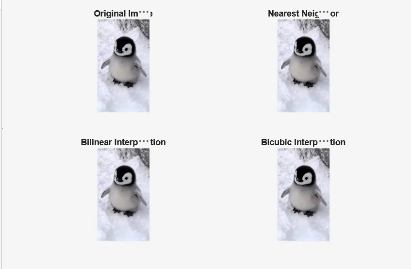
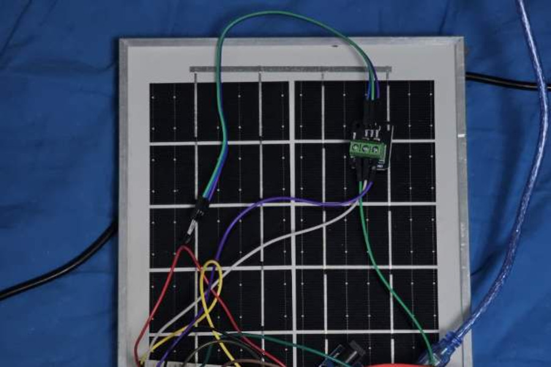
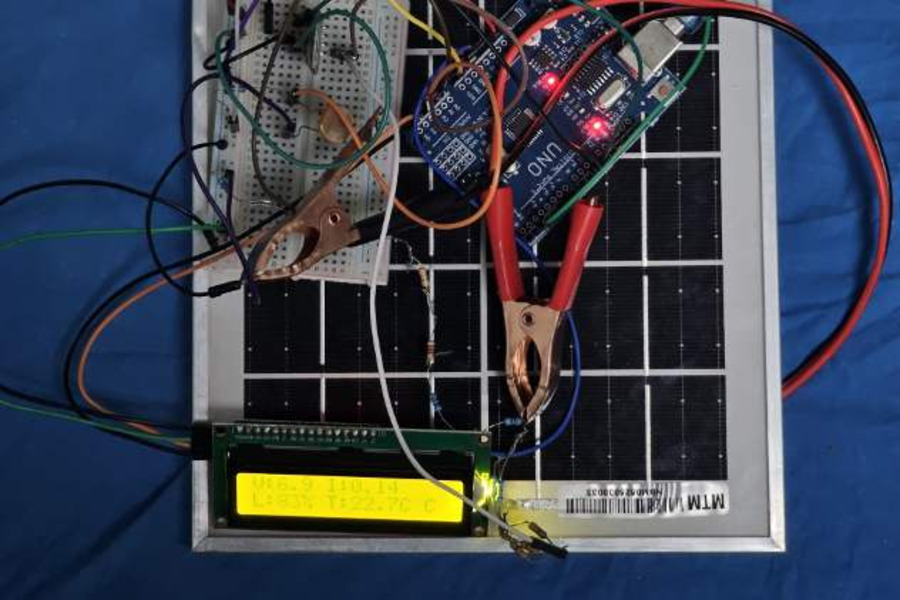
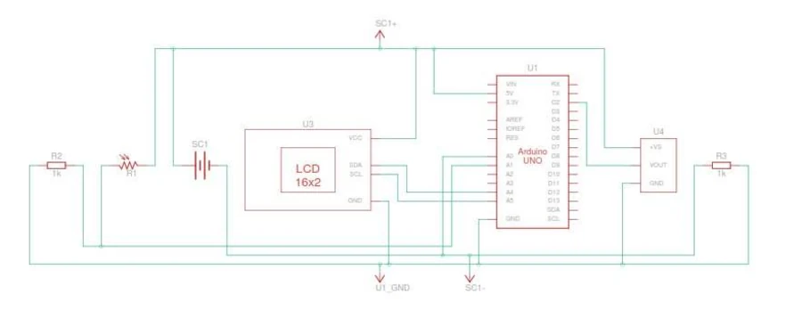
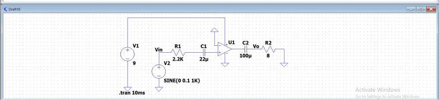
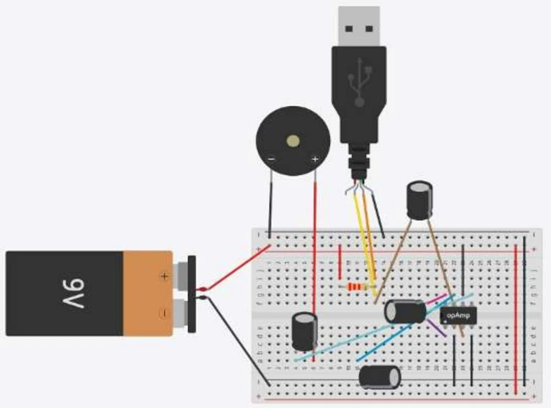
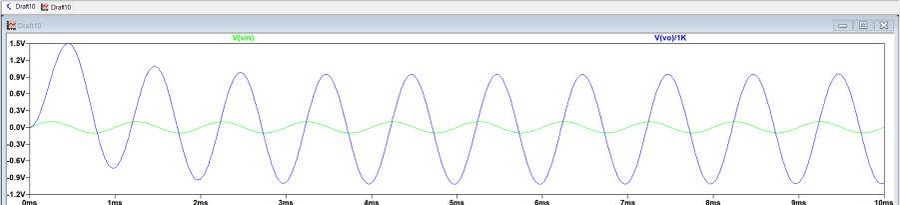

Image Processing & Computer Vision
An image-resizing application built with Python, OpenCV, and Matplotlib, comparing image quality across multiple interpolation methods.
Every case study below follows the same structure: Problem → What I Did → Outcome — so each claim stays something I can actually defend.
FlyRank runs AI internship and learning programs that help students build practical AI fluency — using AI tools productively, evaluating AI-generated work critically, and applying AI to real tasks rather than accepting outputs at face value.
One assignment asked me to define a clear proof statement — a specific claim, audience, and action for my portfolio. Reviewing my actual project history against my first draft taught me the difference between making a claim and being able to defend it with evidence.
"I build practical AI and machine learning projects that solve real-world problems."
"I'm building practical AI and machine learning skills through my internship, university projects, and continuous learning, while building on my engineering and image processing foundation."

Image resizing requires estimating new pixel values that don't exist in the original image, and different interpolation methods handle this estimation differently — with real trade-offs between image quality and computational cost. The goal was to implement and compare three common methods — Nearest Neighbor, Bilinear, and Bicubic — to understand these trade-offs in practice.
I wrote MATLAB code to load a sample image and resize it by a factor of 2×
using each method (via MATLAB's imresize function), keeping the
image and scaling factor identical across all three for a fair comparison.
I displayed the original and resized images side by side and evaluated them
qualitatively — sharpness, smoothness, edge quality, and pixelation.
Studying how each method estimates pixel values explained why the results differed: Nearest Neighbor copies the closest existing pixel, Bilinear averages nearby pixels, and Bicubic uses a wider neighborhood with a smoother mathematical model.
The comparison showed a clear trade-off: Nearest Neighbor was fastest but produced visible pixelation, Bilinear balanced speed and quality, and Bicubic produced the smoothest results at higher computational cost. I documented these findings, along with the MATLAB code and comparison images, in a final project report — concluding that the "best" method depends on the specific requirements of the application: quality versus speed.
Note: this is separate from a 10-person Numerical Analysis (MTH-221) report on Bicubic Interpolation theory that I contributed to as part of a team — that report is a broader theoretical survey, not the individual MATLAB comparison described here.



A system monitoring a solar panel's voltage, current, temperature, and light intensity, using an Arduino Uno, a DS18B20 temperature sensor, an LDR, and an HC-06 Bluetooth module, with live readings shown on an LCD.
Team member focused on system understanding, technical documentation, and hardware assembly assistance. My contribution was to understand the complete system well enough to document it accurately, assist with parts of the hardware assembly, and write the final project report — explaining how the different components worked together to monitor the solar panel's performance.
Ability to understand and communicate a multi-component technical system, work effectively as part of a larger team, and connect hardware and software concepts — foundational engineering skills I'm building on as I move toward applied AI and machine learning work.


The goal was to build a simple audio amplifier that takes a weak audio signal from an AUX source (phone, laptop) and plays it through a small speaker with clear, amplified sound — without needing powered external speakers — while learning the practical roles of resistors, capacitors, and grounding in a real audio circuit.
I built the circuit around a single LM386 op-amp IC on a breadboard, powered by a 9V battery. Key components: a 2.2 kΩ input resistor and 22 µF input capacitor to couple the AUX signal into pin 3, a 22 µF gain capacitor between pins 1 and 8 to raise the gain from its default of 20 up to 200, a 100 µF output capacitor to block DC before the signal reaches the 8Ω speaker, and a 1 µF bypass capacitor on pin 7 to reduce internal noise.
To verify the design before relying on the physical build, I also simulated the circuit in LTspice with a 1kHz sine-wave input, running a 10ms transient analysis to compare the input and output waveforms.

The LTspice simulation confirmed a voltage gain of approximately 200 (calculated from Gain = Vout/Vin with the 22 µF gain capacitor in place), producing a clean, amplified sine wave with no visible distortion or clipping — matching the behavior of the breadboard circuit. Based on the speaker's 8Ω, 0.25W rating, I calculated a safe RMS output of about 1.41V (from P = Vrms²/R). The input impedance, set by the 2.2 kΩ resistor, stayed in a safe range for phone and laptop AUX outputs. Overall, the circuit amplified a weak audio signal into clear, audible sound suitable for a small portable speaker.
These appear on the uploaded resume without full write-ups yet — listed honestly rather than expanded into case studies that don't exist.
An image-resizing application built with Python, OpenCV, and Matplotlib, comparing image quality across multiple interpolation methods.
An interactive quiz application with scoring, input validation, and modular programming concepts.
A survey-based research project on factors affecting students' engineering major selection, with recommendations for career guidance improvement.